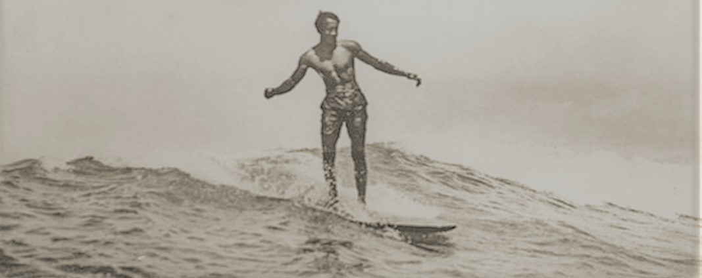
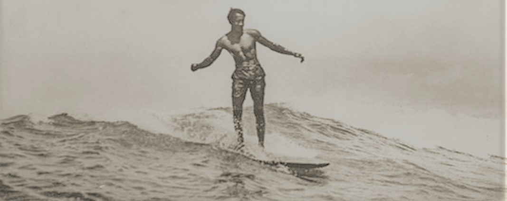
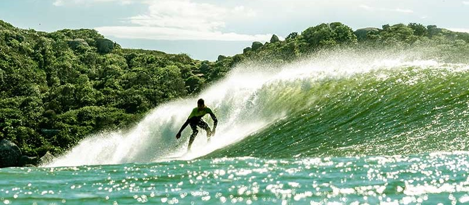
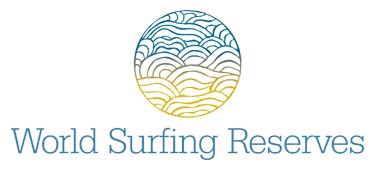

A História do surf: Das raizes antigas às ondas modernas
O Surf é uma prática milenar que se originou em diversas culturas costeiras ao redor do mundo, muito antes da popularização que conhecemos hoje. Embora seja difícil datar com precisão o início dessa atividade, algumas evidências arqueológicas apontam para a existência do Surf há milhares de anos atrás. Vamos embarcar em uma jornada através do tempo, para explorar as raízes antigas e a evolução do Surf até se tornar um fenômeno global.


As Origens Primitivas
As primeiras evidências do Surf remontam a povos polinésios, como os havaianos, samoanos e tahitianos, que possivelmente praticavam o Surf por volta de 1500 a.C. Para essas civilizações, o Surf não era apenas um esporte, mas uma parte intrínseca de suas tradições culturais e espirituais. As pranchas eram esculpidas à mão a partir de madeira de árvores nativas, e o Surf era frequentemente associado a rituais religiosos e festivais.Talvez ainda antes dos polinésios, no litoral do Peru, os povos antigos surfavam com uma espécie de canoa, ou prancha feita com junco, os famosos Caballitos de Totora. Muitos afirmam que esse é o primeiro registro de Surf que se conhece.
 

A Explosão do Surf Moderno
Nos anos 1950 e 1960, o Surf moderno como conhecemos hoje começou a tomar forma. Com o surgimento de novos materiais, como a fibra de vidro e espuma de poliuretano, as pranchas se tornaram mais leves e manobráveis, permitindo aos surfistas explorarem ondas de maneiras antes impossíveis. O cinema também desempenhou um papel fundamental nessa evolução, com filmes como "Gidget" e "The Endless Summer" impulsionando a popularidade do Surf e criando uma subcultura de surfistas.


O Surf como Estilo de Vida
Nas décadas seguintes, o Surf se estabeleceu como um estilo de vida, transcendendo as fronteiras do esporte. Surfistas começaram a se identificar com uma atitude descontraída, em harmonia com a natureza, e com uma paixão pela aventura. Isso se refletiu na moda, na música e em outras formas de arte que adotaram a estética do surf.


Inovações Tecnológicas e Competições
O Surf continuou a evoluir com o avanço das tecnologias de pranchas e equipamentos. Pranchas mais curtas e ágeis permitiram manobras mais radicais, enquanto o uso do leash (uma corda que prende a prancha ao tornozelo do surfista) tornou a prática do Surf mais segura. As competições também se tornaram uma parte essencial da cultura do Surf, com o surgimento de circuitos profissionais e eventos de renome mundial, como o Championship Tour.
O primeiro campeonato mundial de Surf com um circuito bem organizado ocorreu em 1976 e o australiano Peter Townend foi o primeiro campeão mundial. Em 1992, a ASP decidiu dividir o Circuito Mundial em duas divisões: WCT e WQS, e esse formato se mantém parecido até os dias de hoje.


O Surf como Esporte Olímpico
Um momento marcante para o Surf foi sua inclusão nos Jogos Olímpicos de Verão em Tóquio 2020. Pela primeira vez, os melhores surfistas do mundo competiram nas ondas olímpicas, dando ao esporte uma visibilidade sem precedentes e aumentando ainda mais seu apelo global. E para melhorar ainda mais essa história, o primeiro ouro olímpico masculino no Surf foi para um Brasileiro: Ítalo Ferreira.


O Surf e o Meio Ambiente
Enquanto o Surf continuou a prosperar, os surfistas também se tornaram defensores apaixonados do meio ambiente. Com uma conexão íntima com o mar, eles testemunharam em primeira mão os impactos das mudanças climáticas e da poluição. Como resultado, muitos surfistas estão envolvidos em iniciativas de preservação costeira e na conscientização sobre questões ambientais. Inclusive existe desde 2009 a WSR (World Surfing Reserves - ou reserva mundial de Surf) que é uma ONG criada para preservar praias e meio ambientes ligados ao Surf no mundo inteiro: Saiba mais sobre -World Surfing Reserves


Da ancestralidade das ondas polinésias à energia do futuro,
a história do surf continua viva na praia de Intermares,
onde cada maré escreve um novo capítulo dessa paixão.
Melhores surfistas do mundo em todos os tempos e na atualidade (2025)